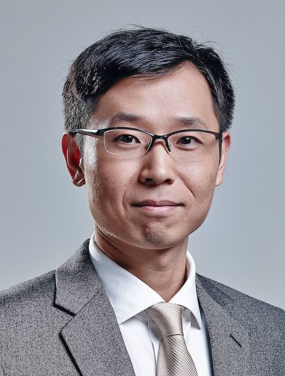

Invited Lectures
| Prof. Moti YungDr. Gong ZhangProf. Shouhuai XuProf. Yugang Jiang |
 |
| Prof. Moti Yung Snapchat Inc. & Columbia University, USA |
| TITLE: Layers of Abstractions and Layers of Obstructions and the U2F |
| BIO:Moti Yung is a Security and Privacy Scientist with Google, with main interests in Cryptography, Security, and Privacy. He graduated from Columbia University in 1988 and is an adjunct senior research faculty at Columbia till today. In parallel to Columbia he has had an industrial research career, working at places like IBM, RSA Labs. (EMC), Snap, and now Google. Yung is a fellow of ACM, of IEEE, of the International Association for Cryptologic Research (IACR) and the European Association for Theoretical Computer Science (EATCS). Among his awards are ACM's SIGSAC Outstanding Innovation Award in 2014, and 2018 IEEE Computer Society W. Wallace McDowell Award. His research covers broad areas: from the theory and foundations, to applied systems, and actual engineering efforts of cryptography, privacy, and secure systems. |
 |
| Dr. Gong Zhang Huawei , China |
| TITLE:Progresses and Challenges in Federated Learning |
 |
| Prof. Shouhuai Xu University of Colorado Colorado Springs, USA |
| TITLE: SARR: A Cybersecurity Metrics and Quantification Framework |
| BIO: Shouhuai Xu is a gallogly chair professor in Cybersecurity, University of Colorado Colorado Springs (UCCS). He is the founding director of the Laboratory for Cybersecurity Dynamics (LCD). Hisresearch expertise is in Cybersecurity, including theoretical cybersecurity foundation, quantitative cybersecurity management and operations,and practical cybersecurity architectures and mechanisms. He has served as an Associate Editor for IEEE Transactions on Information Forensics and Security (IEEE T-IFS) and for IEEE Transactions on Dependable and Secure Computing (IEEE TDSC) and is serving as an Associate Editor for IEEE Transactions on Network Science and Engineering (IEEE TNSE). He is/was a Program Committee co-chair of SciSec’2019, SciSec’2018, NSS’15 and Inscrypt’13. He co-initiated the new conference SciSec (International Conference on Science of Cyber Security) in 2018.He hasserved on the Program Committees of numerous international conferences/workshops. 2wwHe has pioneered the systematically approach of Cybersecurity Dynamics, which aims to quantify and manage cybersecurity and cyber defense operations from a holistic perspective.This approach is in herently multidisciplinary and interdisciplinary, leading to publications across disciplines (including ACM Transactions, IEEE Transactions, Journal of Computer Security, Internet Mathematics, Technometrics, Journal of Applied Statistics, and Physical Review E). He received a PhD degree in Computer Science from Fudan University. |
|  |
| Prof. Yugang Jiang Fudan University, China |
| TITLE: Preliminary Exploration on Several Security Issues in AI |
| BIO:Yu-Gang Jiang is Professor of Computer Science at Fudan University, China, where he currently serves as the Dean of School of Computer Science and School of Software. His research is focused on multimedia, computer vision, and robust & trustworthy AI. As the director of Shanghai Engineering Research Center for Video Technology and System, he leads a group of faculties and students conducting research on all aspects of big video data analytics, such as video content recognition, video forensics, and large-scale visual search. He is the lead architect of a few best-performing video recognition systems in worldwide competitions such as the annual U.S. NIST TRECVID evaluation. Recent works in his group have demonstrated top results in various competitions like the YouTube-8M Video Understanding Challenge. His work has led to many awards, including the inaugural 2014 ACM China Rising Star Award, the 2015 ACM SIGMM Rising Star Award, and the research award for outstanding young researchers from NSF China. He is currently an associate editor of ACM TOMM. He holds a PhD in Computer Science from City University of Hong Kong and spent three years working at Columbia University before joining Fudan in 2011. |